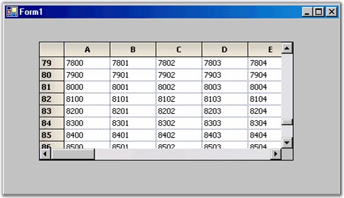

To retrieve data for the Virtual Grid from the external data source
1. Add event handlers for the QueryRowCount and QueryColCount events. Use the following code in your event handlers.
The GridQueryRowCount and GridQueryColCount provide the numbers of rows and columns from the external data source. Thus, the implementation code will access the public properties of our external data object to get these values.
|
[C#]
// Set number of rows from external data source. void GridQueryRowCount(object sender, GridRowColCountEventArgs e) { e.Count = this._extData.RowCount; e.Handled = true; }
// Set number of columns from external data source. void GridQueryColCount(object sender, GridRowColCountEventArgs e) { e.Count = this._extData.ColCount; e.Handled = true; } |
|
[VB.NET]
' Set number of rows from external data source. Private Sub GridQueryRowCount(ByVal sender As Object, ByVal e _As GridRowColCountEventArgs) e.Count = Me._extData.RowCount e.Handled = True End Sub
' Set number of columns from external data source. Private Sub GridQueryColCount(ByVal sender As Object, ByVal e _As GridRowColCountEventArgs) e.Count = Me._extData.ColCount e.Handled = True End Sub |
2. Add a QueryCellInfo event handler.
The GridQueryCellInfo is the event handler where the grid expects the external data source to provide the cell values that are in demand. Here is how it can be implemented with the external data source. Recall that row 0 and column 0 are usually the header columns in a grid. In the GridQueryCellInfo, do not provide these values and use the default headers. If you need to provide special header values, you can do so.
|
[C#]
void GridQueryCellInfo(object sender, GridQueryCellInfoEventArgs e) { if (e.RowIndex > 0 && e.ColIndex > 0) { e.Style.CellValue = this._extData[e.RowIndex - 1, e.ColIndex - 1]; e.Handled = true; } } |
|
[VB.NET]
Private Sub GridQueryCellInfo(ByVal sender As Object, ByVal e _As GridQueryCellInfoEventArgs) If ((e.RowIndex > 0) AndAlso (e.ColIndex > 0)) Then e.Style.CellValue = Me._extData(e.RowIndex - 1, e.ColIndex - 1) e.Handled = True End If End Sub |
Notice that all three handlers set the Handled property on the EventArgs when a value is provided. This informs the grid that no further processing is needed. Don't forget this or you'll lose some of the benefits of using a virtual grid.
3. Compile and run the project. You will see something similar to the screen shot given below. The point is that the grid itself does not hold any data at all. All the data information is being provided on demand through the three events that you have added.

Figure 64: Virtual Grid Holds No Internal Data